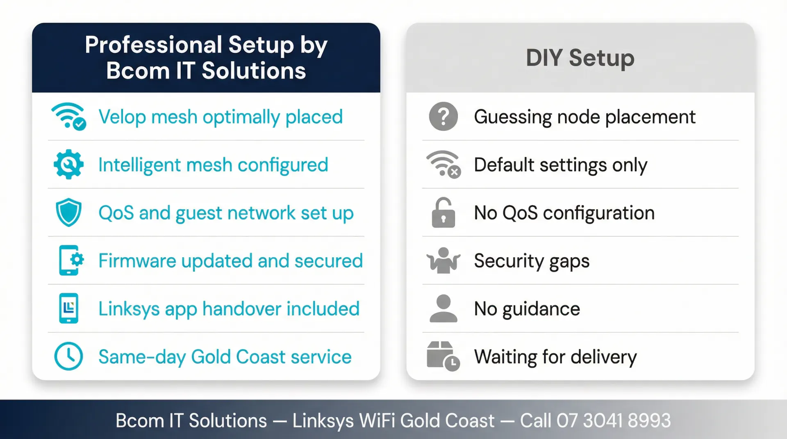

Linksys WiFi Gold Coast — Quick Summary
- Linksys Velop mesh system supply and installation
- Velop node placement optimised for your Gold Coast home layout
- Intelligent mesh routing configured for seamless roaming
- QoS, guest network and parental controls set up correctly
- Firmware updated and WPA3 security enabled from day one
- Linksys app handover included with every install
- ABN 92 636 893 108
Popular Linksys Products for Gold Coast Homes
These are the Linksys models we most commonly supply and install for Gold Coast homes. We cover the Velop mesh and Linksys router ranges.
Wi-Fi 6E · Tri-band Mesh
Velop Pro 6E
PremiumTop-tier Velop mesh for large Gold Coast homes — Wi-Fi 6E with 6 GHz dedicated backhaul.
Wi-Fi 6 · Tri-band Mesh
Velop AX5400
Mid-rangePopular Velop for Gold Coast family homes — strong tri-band performance and easy Linksys app management.
Wi-Fi 6 · Dual-band Mesh
Velop MX4200
Mid-rangeReliable Velop for mid-size Gold Coast homes needing whole-home coverage without the premium price.
Wi-Fi 5 · Compact Mesh
Velop AC1300
BudgetAffordable Velop mesh for apartments and smaller homes in Surfers Paradise and Broadbeach.
Wi-Fi 6 · AX5400 · Single Router
Linksys MR5500
Mid-rangeStandalone Linksys router for smaller homes needing a reliable single-unit solution.
Prices vary by model and installation complexity. Call 07 3041 8993 for a quote.
What We Do — Linksys WiFi Gold Coast
From Velop mesh installs to Linksys router configuration, here is what we cover for Gold Coast homes and home offices.
Velop Mesh Installation
We install and configure Linksys Velop mesh systems with nodes optimally placed for complete coverage across your Gold Coast home.
Intelligent Mesh Configuration
We configure Velop's intelligent mesh routing so devices seamlessly roam between nodes at the best available speed.
QoS & Traffic Management
We configure QoS rules to prioritise streaming, video calls and gaming traffic for the best household experience.
Security & Guest Network
WPA3 encryption, isolated guest networks, parental controls and automatic firmware updates configured correctly from day one.
Linksys App Handover
We install the Linksys app on your phone and walk you through monitoring your network, managing devices and running speed tests.
Troubleshooting & Upgrades
Already have a Linksys router that needs reconfiguring, expanding or troubleshooting? We support existing setups and can add Velop nodes or upgrade hardware.
How a Linksys WiFi Installation Works
Phone Consultation
Tell us about your home — size, layout, current router and the areas with poor signal. We advise on hardware and provide a quote on the call.
Hardware Procurement
We source your Linksys hardware and schedule the installation. Common Velop models are available for fast-turnaround installs across the Gold Coast.
Installation & Configuration
We place Velop nodes, configure intelligent mesh routing, set up SSIDs, QoS, guest networks and security. We test coverage in every room before we leave.
Handover & Support
We walk you through the Linksys app and answer questions. Call 07 3041 8993 if anything comes up after we leave.
Linksys WiFi Installation on the Gold Coast — What to Expect
Linksys WiFi Gold Coast homes benefit from the Velop mesh range, which has been a popular choice for Australian households since its introduction. Gold Coast properties — particularly the large single-level homes common in Robina, Coomera and Varsity Lakes — benefit from mesh coverage rather than a single router placed near the modem. Velop's intelligent mesh routing ensures devices seamlessly roam between nodes without dropping connections, which is important for households with mobile devices moving between rooms.
Linksys Velop mesh systems handle the Gold Coast's varied building types well. Tilt-slab construction is widespread in newer suburbs like Pimpama, Ormeau and Coomera, and the thick concrete panels reduce WiFi range significantly compared to timber-framed homes. Velop's tri-band models use a dedicated 5 GHz backhaul channel that keeps the mesh link separate from client connections, maintaining throughput even when multiple devices are active. In homes across Helensvale, Nerang and Mudgeeraba where long single-level floor plans are common, a two or three-node Velop system typically provides seamless coverage from the front living area through to the back patio. The Linksys app makes it straightforward to check signal strength at each node location before committing to a final
The Velop Pro 6E range adds a dedicated 6 GHz backhaul band, which significantly improves throughput between nodes in homes with many walls or floors. This is particularly beneficial in Gold Coast homes with concrete construction where the 5 GHz backhaul on dual-band systems can be attenuated. We recommend the appropriate Velop tier based on your home's specific construction and layout.
Linksys Velop setup goes beyond placing nodes and connecting to the app. We configure your ISP connection settings, set up the Linksys app on your phone, enable WPA3 security, and create a separate guest network for visitors. For Velop Pro models, we configure the intelligent mesh settings and enable device prioritisation so your work laptop or smart TV gets bandwidth preference during peak hours. We update Velop firmware to the latest version, disable remote access if not required, and run a speed test from each node location before we leave. We also label your network and document the login details so you have a clear record for future reference
bcom ICT is a locally operated Gold Coast IT services company. We are not affiliated with Linksys and provide independent advice on whether Velop is the right solution for your home. In some cases — particularly for homes requiring more advanced network segmentation or commercial-grade access points — we may recommend a different platform. Our goal is the best outcome for your home, not a particular brand sale.

Linksys WiFi Gold Coast — Frequently Asked Questions
Linksys WiFi Installation Across the Gold Coast
We provide Linksys WiFi setup and configuration services across all Gold Coast suburbs. Whether you are in a beachside apartment in Surfers Paradise or a large family home in Coomera, we can help. Bcom Services Pty Ltd — ABN 92 636 893 108 — is a locally operated Gold Coast IT services company. Call 07 3041 8993 to book.
For general WiFi setup and troubleshooting across all brands, see our WiFi installation Gold Coast page.
Why Choose Linksys for Your Gold Coast Home or Business?
Linksys (now owned by Belkin) has a long history of producing robust, high-performance networking equipment. Their Velop mesh systems are particularly well-regarded for their intelligent routing capabilities and sleek, unobtrusive design that blends into modern Gold Coast homes.
For larger homes or small offices with high device counts, Linksys routers offer excellent traffic management and Quality of Service (QoS) features. This ensures that video calls and streaming services get priority over background downloads, keeping your connection smooth even when the network is busy.
bcom ICT provides expert installation and configuration of Linksys equipment. We do not just plug it in — we optimise the channel widths, secure the administrative interface, and ensure the system is positioned for maximum coverage.
Common Linksys Issues We Resolve
Velop Setup Failures
The Linksys app setup process can sometimes stall or fail to find child nodes. We bypass the app issues, configure the nodes manually if required, and ensure the mesh network forms correctly.
Double NAT Problems
If you have connected a Linksys router to an existing modem/router provided by your ISP, you may experience "Double NAT" issues affecting gaming and VPNs. We configure the correct bridge or passthrough modes to resolve this.
Device Prioritisation
Linksys QoS settings can sometimes aggressively throttle certain devices. We audit your traffic rules and reconfigure the prioritisation settings so all devices get the bandwidth they need.
Book a Linksys WiFi Installation on the Gold Coast
Velop mesh systems — supplied, installed and fully set up for your home.
Last updated: March 2026